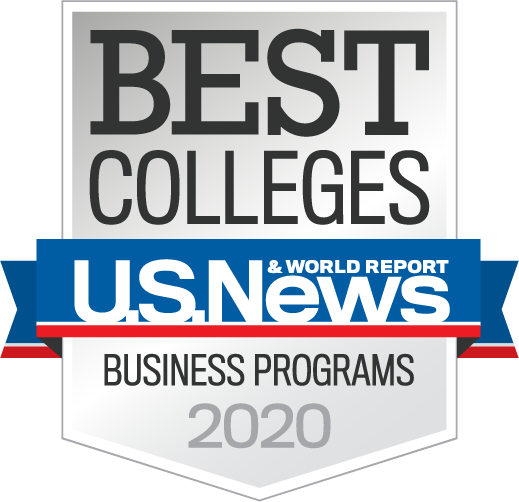
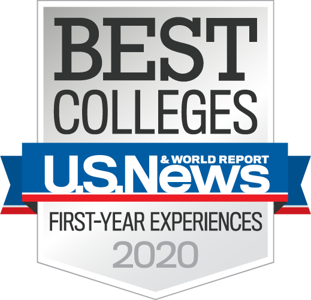
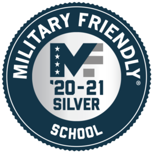
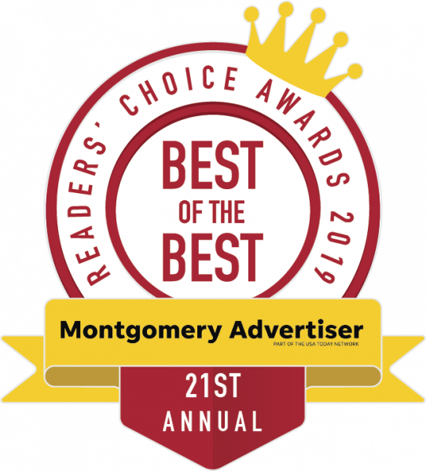
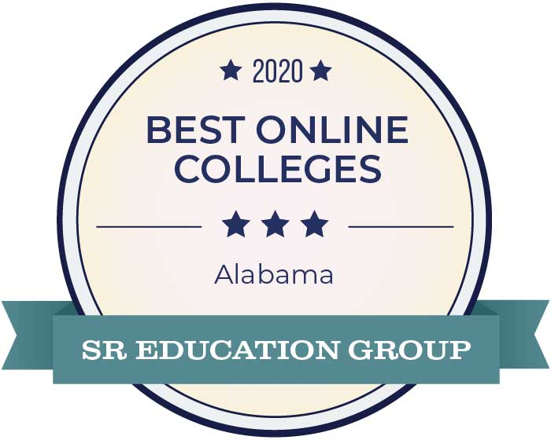

Founded in 1967 and located in Alabama’s capital city, Auburn University at Montgomery has distinguished itself as the college of choice for students in Alabama’s River Region and beyond. In 2019, Auburn University at Montgomery earned a No. 33 ranking among regional public universities in the South from U.S. News & World Report. AUM was also recognized by U.S. News as the most ethnically diverse campus in Alabama and the 13th most diverse in the South region with more than 40 nationalities represented. AUM also earned recognition from The Princeton Review as one of the best colleges in the Southeast and is the only River Region university to be designated a “Military Friendly School” by Victory Media. It’s no wonder that Auburn University at Montgomery emerged from a crowded field of competitors to earn the Montgomery Advertiser Reader’s Choice Award in 2019 as the top university in the region for the second consecutive year. Accredited by the Commission on Colleges of the Southern Association of Colleges and Schools, AUM offers more than 90 undergraduate and graduate degree programs and certifications. Students can join us on our verdant, 500-acre campus, learn at their convenience in an online setting or experience a blend of both through hybrid course delivery. If it inspires you or defines who you want to be, you’ll find it in one of our five colleges – College of Business, College of Education, College of Liberal Arts and Social Sciences, College of Nursing and Health Sciences, and the College of Sciences. We offer programs that are unique among our regional peers, including Geographic Information Systems, Hospitality and Tourism, Homeland Security and Emergency Management, and Cybersystems and Information Security. Our students receive in-depth knowledge and practical experience from award-winning faculty members whose academic expertise is often enriched by industry experience. Best of all, with a student-to-faculty ratio of 17:1, your professors will know your name. Nearly 50 percent of our classes include 20 or fewer students, which feeds into a personalized and engaging learning experience. We also pride ourselves on making a high quality education more affordable. Nearly 40 percent of AUM students earn scholarship assistance of some type, including scholarships designated for incoming freshmen, transfer students, international students, graduate students, and active duty military, veterans and their dependents. We offer a diverse, close-knit and active campus community with more than 70 student clubs and organizations, and an athletic program that is flourishing as a new member of NCAA Division II membership and the Gulf South Conference. If you’re ready to soar to new heights, join the Warhawk Nation today!
At AUM, you’ll work with the world’s smallest supercomputer. You’ll have access to the most powerful computational resources and expertise in the country through our partnership with the NSF-supported Extreme Science and Engineering Discovery Environment. Computer Science faculty are engaged in the private sector, supporting research and partnerships with national and international user groups and initiatives.
At AUM, high standards and personal attention combine to create a world-class educational experience. Excellent Academics: Auburn University at Montgomery ranks among the South's top universities by U.S. News and World Report. Consistently chosen the best university in the area, Auburn University at Montgomery provides students with detailed knowledge and hands-on, practical experience, often from professionals in the field. In the College of Business, for example, students learn from faculty members who were former managers of Fortune 500 companies, renowned economist, certified public accountants, researchers, and software developers. Students can also gain real-world experience by participating in internships at area companies. Personal Attention: At Auburn University at Montgomery, class sizes are small (1 professor: 16 students). You can work more closely with your classmates and professors. Also, the Office of Global Initiatives works directly with all international students from the moment they arrive in the USA. We will help you with the application form and visa issues. We will pick you up at the Montgomery Airport, help you locate your apartment on campus, set up Internet and phone service, and find your adviser. Affordable Education: Auburn University at Montgomery's tuition is much lower than many institutions in the USA. Also, Auburn University at Montgomery offers international scholarships — up to $4,000 per year for qualified international students.
    